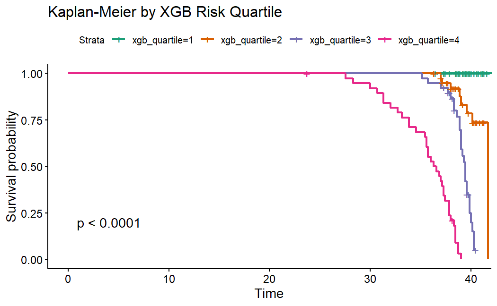
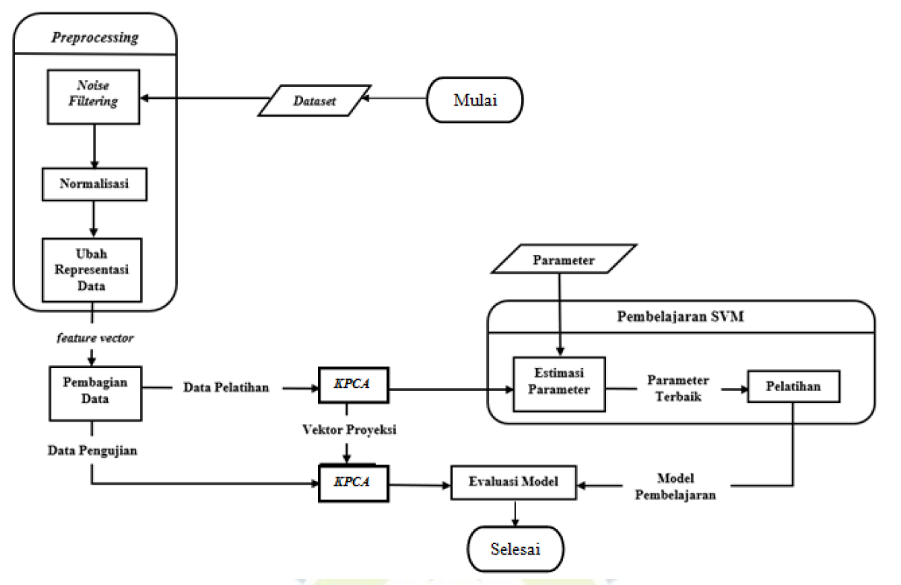

Turning Raw Data into Actionable Insights for Better Decision-Making.
About Me
Mathematical Foundation & Analytics
I am a Data Professional with a solid Mathematics background and hands-on experience in data analysis, statistical modeling, machine learning, and business intelligence.
Holding a Master's degree in Mathematics with a specialization in Data Science, I focus on bridging complex quantitative analysis with practical business strategy by building data pipelines, exploratory data analysis workflows, predictive models, and interactive visual dashboards to support strategic decision-making.
Tech Stack & Core Competencies
Technical tools, languages, and domain specializations.
Languages & Core
Data Analysis & Viz
Data Science & ML
Featured Projects & Research
Categorized showcase of data analysis, dashboards, machine learning, and statistical research.
Data Science Projects

Early Preeclampsia Detection Using XGBoost-Cox Proportional Hazard
Developed a hybrid machine learning survival analysis model combining XGBoost with Cox Proportional Hazard (XGB-Cox) to predict first-trimester preeclampsia risk, outperforming baseline Cox-PH models (C-index 0.8908 vs. 0.7548). Conducted sensitivity analysis on censoring proportions.

Handwritten Arabic Character Recognition via KPCA & SVM
Engineered an OCR pipeline for handwritten Hijaiyah characters combining Kernel Principal Component Analysis (KPCA) for feature dimensionality reduction and Support Vector Machines (SVM) for classification, achieving 76% accuracy after systematic hyperparameter tuning.
Pneumonia Detection Web App via CNN
Engineered and deployed an interactive deep learning web application to classify chest X-ray images for pneumonia detection, wrapping a CNN pipeline (leveraging a base model by Madhav Mathur) achieving 92.6% accuracy into a Huggingface Space.
Data Analyst Projects

Cyclistic Bike Share Trip Data Analysis
Analyzed historical trip data to uncover distinct usage patterns between casual riders and annual members. Formulated data-backed marketing strategies aimed at converting casual riders into long-term subscribers and visualized key trends in an interactive Tableau dashboard.
Professional Certifications
Industry-recognized credentials in analytics and data science. Click any card to view credential.
Google Data Analytics
Professional Certificate
Comprehensive program covering data cleaning, analysis, SQL, R, and visualization best practices.
Data Analyst Professional Academy
Digital Talent Scholarship (KOMINFO)
Intensive training in business data analysis, spreadsheet modeling, SQL database querying, and dashboard reporting.
Data Scientist Professional Academy
Digital Talent Scholarship (KOMINFO)
Advanced machine learning modeling, Python predictive analytics, data prep pipelines, and algorithm deployment.
Scientific Publications
Peer-reviewed statistical & data science research.
Early Preeclampsia Detection Using XGBoost-Cox Proportional Hazard Model
Syahdwinata, A. W., & Abdullah, S. (2025). Indonesian Journal of Statistics and Its Applications, 9(1), 33-45.
Applied Experience
Practical analytics, operational optimization, and technical solutions.
Administrative Coordinator & Data Analyst
Mar 2018 – 2025Klinik Pratama dr. Hasto S.
- Delivered data-driven pricing optimization insights for antigen services, driving a 10% increase in sales.
- Built custom Excel systems for patient registration, billing, and doctor honorarium processing.
- Served as internal data analyst—performing data cleaning, aggregation, and ad-hoc quantitative reporting.
- Designed and delivered practical computer training sessions for staff.
Send a Message
Open for Data Scientist, Data Analyst, and Quantitative Analytics opportunities. Feel free to reach out directly!